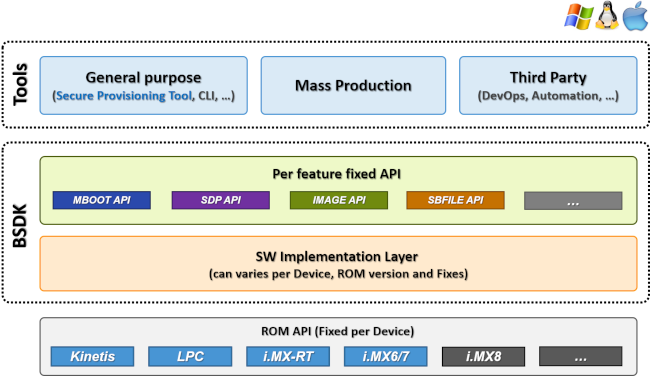

Overview¶
Secure Provisioning SDK (SPSDK) is unified, reliable and easy to use SW library working across NXP MCU and MPU portfolio providing strong foundation from quick customer prototyping up to production deployment. Is following the philosophy: code less but do more.

SPSDK Modules:
Crypto - Support for key’s and certificate’s operations
DAT - Covering functionality of
debug authenticationtoolImage - Covering functionality of
srktool,dcdgen,mkimageand other similar toolsMBoot - Covering functionality of
blhosttoolPFR - Support for configuration of Protected Flash Region areas (CMPA, CFPA)
SBFile - Covering functionality of
elftosbtoolSDP - Covering functionality of
sdphosttool
Installation¶
Installation directly from master branch bitbucket.sw.nxp.com:
pip install -U https://bitbucket.sw.nxp.com/rest/api/latest/projects/SPSDK/repos/spsdk/archive?format=zip
If you will be asked for credentials, use your NXP login and password:
User for bitbucket.sw.nxp.com: nxa...
Password: ******
In case of development, install SPSDK from sources:
git clone ssh://git@bitbucket.sw.nxp.com/spsdk/spsdk.git
cd spsdk
pip install -r requirements-develop.txt
pip install -U -e .
Note: If you use pip version 20.3, please downgrade it to 20.2.4, because of new resolver functionality.